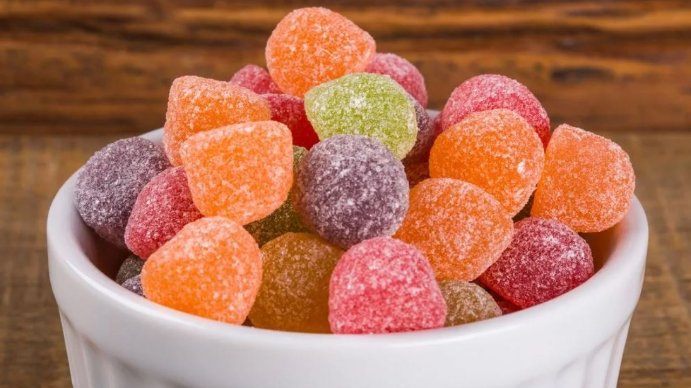

|  |
| ◄ | ► |
| A Dossuto trabalha com a chamada ideologia verde criada por seu fundador Oscar Alfredo Cox
em 1952 enquanto ainda era uma pequena loja de doces em Amsterdam na Holanda. A nossa ideologia é formada pela ideia de não poluir o meio ambiente, e para isso nós utilizamos embalagens feitas com papeis reciclados e ingredientes 100% orgânicos. |